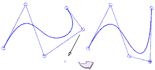

样条约束
约束选项让您可以通过限制极点移动来控制样条形状，这些选项只能在拖动极点时使用：
-
在曲线平面上
— 对极点的移动和样条的形状不加约束
-
端点斜率
— 用于在曲线端点附近更改曲线的形状而不更改曲线的端点斜率。只有移动前两个或最后两个极点才会影响端点斜率
-
终点曲率
— 用于在曲线的终点附近更改曲线的形状而不更改曲率。只有移动前三个极点或最后三个极点才会影响终点曲率
-
沿方向
— 可供沿着用定义拖动方向选项指定的矢量拖动选中的极点
-
在平面上
— 用于在使用定义拖动平面选项指定的平面上拖动选中的极点。
-
在视图平面上
— 在光标所在的视图平面上移动选中的极点。
